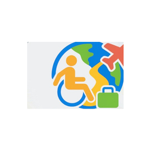
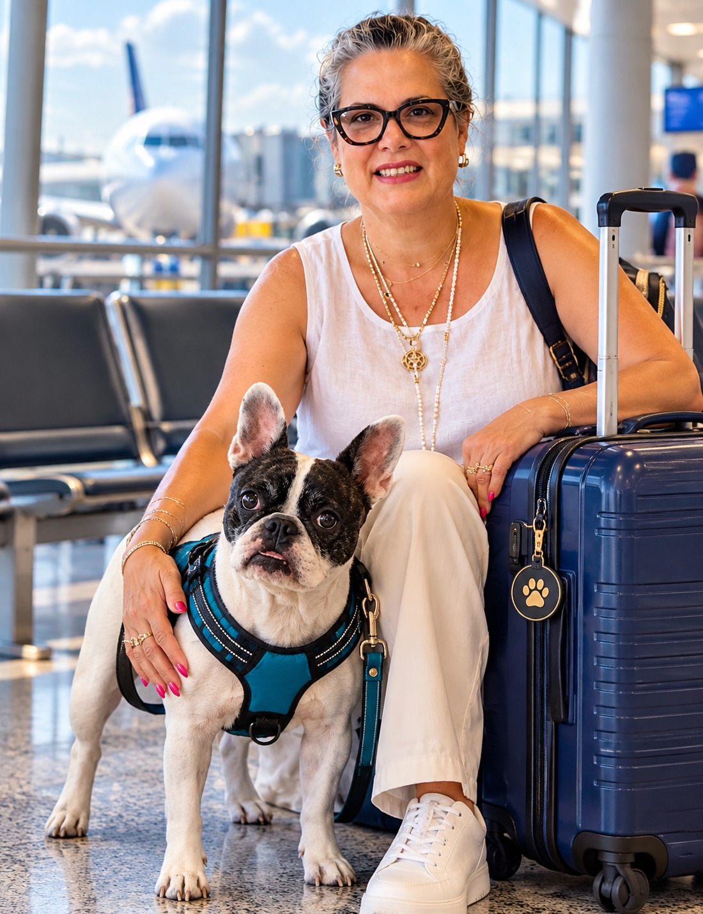

KIT GRATIS
Antes de volar con tu perro de servicio
Lo que tienes que revisar antes de comprar el boleto y antes de llegar al aeropuerto, para que no te tome por sorpresa.
01 En el avión manda otra ley
02 El formulario del DOT: la versión correcta
03 El error más caro: la fecha del formulario
04 Lo que tienes que preguntarle a tu aerolínea
05 Tu checklist y el bolso de tu perro

Yadira Suárez
Fundadora de AllGo Travel App · allgotravel.app · @allgotravelapp
AllGo Travel AppKit gratis · Antes de volar
ANTES DE EMPEZARHola, soy Yadira

Viajo con mi papá, que usa scooter de movilidad, y con Luna, mi perrita de servicio.
Preparar mi primer viaje con Luna me tomó más de 30 días. Leí todo lo que encontré. Y aun así, al final, la aerolínea me pidió otro papel que yo no tenía en la lista: la forma de vacunas firmada por el veterinario.
Ahí entendí que el problema no es que viajar con tu perro sea imposible. El problema es que la información está regada, en inglés, y cada aerolínea pide algo distinto.
Este kit es lo primero que yo hubiera querido tener: qué revisar antes de volar, para que llegues al mostrador sin sorpresas.
Cómo usar este kit: léelo una vez completo y marca los cuadritos. Si algo no lo tienes claro todavía, está bien: para eso es la lista. Cada cosa que marques es un susto menos el día del vuelo.
Este kit es información general verificada con fuentes oficiales del Departamento de Transporte de EE.UU. (DOT). No es asesoría legal. Las reglas pueden cambiar y cada aerolínea y cada país tienen sus propios requisitos: confírmalos siempre con ellos.
AllGo Travel AppKit gratis · Antes de volar
01 · LO PRIMEROEn el avión manda otra ley
Seguro has leído en internet que "solo te pueden hacer 2 preguntas" sobre tu perro de servicio. Esa regla viene de la ADA, la ley que aplica en tiendas, restaurantes y hoteles.
En el avión no aplica. Los vuelos se rigen por otra ley, la de acceso al transporte aéreo (ACAA), y por las reglas del DOT (14 CFR parte 382). Por eso la aerolínea sí puede pedirte el formulario del Departamento de Transporte antes de dejarte volar con tu perro.
Mucha gente llega al aeropuerto confiada en "las 2 preguntas", sin el formulario, y ahí empiezan los problemas.
Qué significa para ti
- No cuentes con que "no te pueden pedir nada". Cuenta con que te van a pedir el formulario del DOT.
- Un "certificado" o "registro" comprado en internet no reemplaza el formulario del DOT.
- Lo que vale es lo que pide tu aerolínea, en el formato y con el tiempo que ella indica.
En la guía completa: qué te pueden pedir y qué no en el mostrador y en la puerta, y qué decir en cada caso.
AllGo Travel AppKit gratis · Antes de volar
02 · EL DOCUMENTO CLAVEEl formulario del DOT: la versión correcta
Se llama U.S. Department of Transportation Service Animal Air Transportation Form (formulario del Departamento de Transporte para animales de servicio). Es gratis y sale del sitio oficial del DOT o de la página de tu aerolínea.
Revisa la fecha de la versión. La versión vigente del formulario es la del 20 de septiembre de 2024. Si encontraste una copia vieja en un grupo de Facebook o en una página cualquiera, descárgalo de nuevo desde la fuente oficial.
Antes de llenarlo, revisa
- Lo descargaste del sitio del DOT o de tu aerolínea (no de una página que te cobra).
- La versión dice 20 de septiembre de 2024.
- Ya compraste el boleto (en la página siguiente te explico por qué esto importa tanto).
- Sabes si tu aerolínea lo quiere por su página web, por correo o impreso.
- Tienes a la mano los datos de tu perro y de su veterinario.
En la guía completa: el formulario explicado campo por campo, con un ejemplo ya lleno, para que no dudes en ninguna casilla.
AllGo Travel AppKit gratis · Antes de volar
03 · EL ERROR MÁS CAROLa fecha del formulario
Este es el error que más duele, porque lo haces en casa, con toda la buena intención, y te enteras en el aeropuerto.
La regla del DOT, 14 CFR 382.75(a): la fecha del formulario tiene que ser igual o posterior a la fecha en que compraste el boleto.
O sea: si llenas el formulario "para adelantar" y compras el boleto días después, el formulario quedó con fecha anterior a la compra. Y eso le da a la aerolínea un motivo para no aceptarlo.
✗ Así NOFormulario 1-dic
Boleto 5-dicLa fecha del formulario es anterior a la compra.
✓ Así SÍBoleto 5-dic
Formulario 5-dic o despuésPrimero compras, luego llenas.
Tu regla simple
- Primero compro el boleto.
- Después lleno y fecho el formulario.
- Si cambio o vuelvo a comprar el boleto, reviso si necesito llenar uno nuevo.
AllGo Travel AppKit gratis · Antes de volar
04 · ANTES DE PAGARLo que tienes que preguntarle a tu aerolínea
Cada aerolínea pide cosas distintas y con tiempos distintos. Hazle estas preguntas antes de pagar el boleto, y pide la respuesta por escrito (correo o chat), no solo por teléfono.
- ¿Qué formularios me piden para viajar con mi perro de servicio?
- ¿Con cuánta anticipación los tengo que enviar, y por dónde (web, correo, en persona)?
- ¿Hay algo extra si el vuelo es largo?
- ¿Mi perro viaja a mis pies? ¿Qué pasa con el tamaño de mi perro y el espacio de mi asiento?
- ¿Puedo pedir asistencia en el aeropuerto y embarque prioritario? ¿Cómo la reservo?
- Si tengo escala, ¿aplica lo mismo en la segunda aerolínea o en el otro aeropuerto?
- Si vuelo a otro país, ¿qué documentos del perro piden en el destino?
Tip: guarda las respuestas en una carpeta del teléfono junto con tu boleto. Si en el mostrador hay dudas, tienes por escrito lo que te dijeron.
En la guía completa: la tabla de aerolíneas por región y el calendario de preparación con los tiempos ya ordenados.
AllGo Travel AppKit gratis · Antes de volar
05 · IMPRÍMELATu checklist antes de volar
Antes de comprar el boleto
- Tengo claro que mi perro es de servicio y no de apoyo emocional.
- Le hice las preguntas a mi aerolínea (página 6) y tengo las respuestas por escrito.
- Si vuelo fuera de EE.UU., ya revisé qué pide el país de destino para mi perro.
Después de comprar el boleto
- Descargué el formulario oficial del DOT (versión 20-sep-2024).
- Lo llené con fecha igual o posterior a la compra del boleto.
- Lo envié como pide mi aerolínea, a tiempo.
- Reservé la asistencia del aeropuerto, si la necesito.
La semana del vuelo
- Vacunas y papeles del veterinario al día, impresos y en el teléfono.
- Formulario impreso y guardado como foto.
- Ubiqué el área de alivio para perros en el aeropuerto de salida y de escala.
- Si vuelo en EE.UU. y quiero ayuda en el control de seguridad: llamé a TSA Cares al (855) 787-2227 con al menos 72 horas de anticipación.
AllGo Travel AppKit gratis · Antes de volar
EL DÍA DEL VIAJEEl bolso de mano de tu perro
Todo esto va contigo en cabina, no en la maleta documentada:
Documentos (en una carpeta o funda)
- Formulario del DOT impreso.
- Papeles de vacunas y del veterinario.
- Las respuestas de tu aerolínea por escrito.
- Una foto de todo esto en tu teléfono, por si acaso.
Para tu perro
- Agua y un bebedero plegable.
- Correa, arnés o chaleco, y una manta o toalla con su olor.
- Bolsas para desechos y toallitas.
- Un poco de su comida o snack habitual, por si hay retrasos.
Los datos de tu perro (escríbelos aquí)
Nombre: ______________________ Raza y tamaño: ______________________
Microchip: ____________________ Veterinario y teléfono: _______________
Tarea para la que está entrenado: ________________________________________
AllGo Travel AppKit gratis · Antes de volar
LO QUE FALTAYa sabes qué revisar. Falta el cómo.
Con este kit ya sabes lo que casi nadie revisa: que en el avión manda otra ley, que la versión del formulario importa y que la fecha puede tumbarte el viaje.
Lo que este kit no te da, porque no cabe en 10 páginas:
- Todos los pasos en orden, desde que piensas en el viaje hasta que te sientas en el avión.
- El formulario del Departamento de Transporte explicado campo por campo, con un ejemplo ya lleno.
- Qué decir en el mostrador, palabra por palabra, en español y en inglés.
- Las aerolíneas por región y los requisitos por país si vuelas fuera de EE.UU.
Eso es lo que me hubiera ahorrado esos más de 30 días con Luna. Por eso lo puse todo en una guía.
Pasa a la última página. →
AllGo Travel AppTu siguiente paso
GUÍA COMPLETA · ES + ENSi quieres todos los pasos en orden…
…el formulario del Departamento de Transporte campo por campo y qué decir en el mostrador:
Viaja con tu Perro de Servicio
Guía en español e inglés, de AllGo Travel App.
- Todos los pasos en orden, del boleto al avión.
- El formulario del DOT explicado campo por campo.
- La tarjeta "Modo Mostrador": qué decir, palabra por palabra.
- Aerolíneas por región y requisitos por país.
- Incluye el kit "Antes de Volar" completo como bono.
$37 · un solo pago · acceso inmediato
Garantía de 7 días: si la guía no es lo que esperabas, te devolvemos el 100%. Solo escríbenos.
Quiero la guía completa →
allgotravel.app/perro.html
"Es espectacular, muy práctico y una excelente ayuda." — Bertha
Con cariño,
Yadira · AllGo Travel App